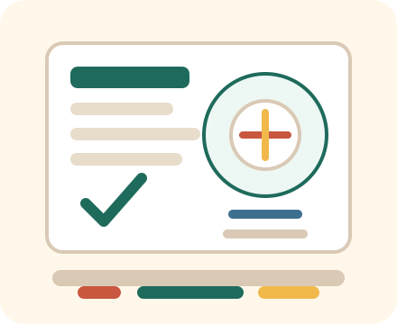

一句话定位
我熟悉学校环境，愿意从一线服务做起，能做好现场执行、沟通接待、物资盘点和卫生规范。
国际学校餐厅服务 / 运营助理
把幼教经历转化成一线服务、现场执行、物资盘点和学校场景优势，用手机就能快速刷题复盘。

先背这一页
我熟悉学校环境，愿意从一线服务做起，能做好现场执行、沟通接待、物资盘点和卫生规范。
高频问题
开场表达
转行解释
面试前三天
面试结尾
投递材料
本人本科，具备多年幼儿园及早教一线服务经验，曾任亲子指导师、幼儿园专任教师，长期面对学生、家长及园区日常运营场景，具备较好的服务意识、沟通能力、责任心和现场执行力。
过往工作中，长期负责家长接待、日常沟通、学生秩序维护、活动组织、物资管理和突发问题处理。曾累计处理家长沟通及服务协调问题 200+ 起，参与策划主题活动 100+ 场，并负责物资库存管理、数据统计和流程跟进。
本人适应学校环境，亲和力强，做事细致，能接受餐厅一线服务工作，包括餐前准备、餐具整理、桌椅摆放、分餐送餐、现场接待、卫生维护及高峰期秩序协助。虽然没有直接餐饮从业经历，但愿意按照公司标准学习食品安全、服务流程和餐厅运营规范，稳定踏实发展。